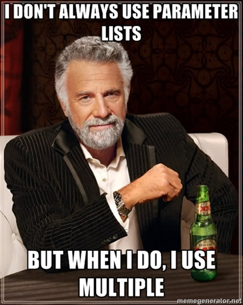

Scala my Android
About me

what about you?
?
Scala...
means Stairs
Scala...
- is a Functional language
- ... and Object Oriented language
- ... that runs on the JVM
- ... so, it compiles down to Bytecode
- ... so, it can run on Android!
The basics first!
Variables vs. Values
Coding like a final nazi!val conference = "Mobilizejszon"
// conference = "mobilization" // compile error val == "java final"
var age = 90
age = 2
// age = "trolololo!" // compile error String != Int
The Type was inferred.
You can type it though:
You can type it though:
val name: String = "Mobilization"val name: String = "Mobilization" ; // yay semicolons, GREAT!!!From POJO...
public class Person {
private String name;
private String surname;
public Person(String name, String surname) {
this.name = name;
this.surname = surname;
}
public String getName() { return name; }
public void setName(String name) { this.name = name; }
public String getSurname() { return surname; }
public void setSurname(String surname) { this.surname = surname; }
@Override
public String toString() { /*...*/ }
}
... to POSO!
class Person(name: String, surname: String)Case class
case class Person(name: String, age: Int)- has toString,
- has hashCode, equals and more scala specific things...
Collections
"Find all young women and say hello!"
List<String> girls = FluentIterable
.from(people)
.filter(new Predicate<Person>() {
@Override
public boolean apply(Person person) {
return person != null && person.isWoman();
}
})
.transform(new Function<Person, String>() {
@Override
public String apply(Person input) {
return input.getFirstName() + " " + input.getLastName();
}
})
.toImmutableList();
for(String name : names)
println(String.format("Hello %s!", name);
// PS: DON'T call format on Android!And that's pretty cool, for Java, actually... (Guavarocks).
Embrace Scala Collections
The same as before, reimplemented:people.filter(_.isWoman)people.filter(_.isWoman).map(_.name)people.filter(_.isWoman).map(_.name).foreach(greet _)
You could write is like this:
def greet(name: String) = println("Hello " + name + "!")
people filter { _.isWoman } map { _.name } foreach { n => greet _ } Let's roll
Off to android stuff!findById
<Button
android:id="@+id/my_button"
android:layout_width="wrap_content"
android:layout_height="wrap_content"
android:text="@string/my_button_text">
Java:
Tip: One thing is fixable by RoboGuice.
class MyActivity extends Activity {
ListView comments;
Button newComment;
@Override
void onCreate(Bundle bundle) {
super.onCreate(bundle);
comments = (ListView) findViewById(R.id.comments);
newComment = (Button) findViewById(R.id.new_comment);
}
}
Tip: One thing is fixable by RoboGuice.
findView + TR
TR == TypedResource.class MyScalaActivity extends ScalaActivity {
lazy val Comments = findView(TR.comments)
lazy val NewComment = findView(TR.new_comment)
// with Types!
}
What's a lazy val?
Lazy values
var thing = 0
lazy val incrementInLazyVal = { thing += 1; thing }
thing = 100
incrementInLazyVal
incrementInLazyVal
incrementInLazyVal
assert { thing == 101 && incrementInLazyVal == 101 }
vs. val:
var thing = 0
val incrementInVal = { thing += 1; thing }
thing = 100
incrementInVal
incrementInVal
incrementInVal
assert { thing == 1 && incrementInVal == 1 }Note: No one writes such convoluted Scala! But this explains when what is evaluated.
Calling methods without ()
var thing = 0
def incrementDef() = { thing += 1; thing }
incrementDef()
incrementDef
incrementDef
assert { thing == 3 }
doesn't work the other way:
def something = 1337
something // OK
something() // compile errorTraits
A trait:
- is "An interface with implementation".
- can be "mixed in"
- MANY traits can be mixed into one single class
- it's NOT "just multiple inheritance", it's smarter:
- "type linearization" avoids the "diamond problem"
Traits
trait SayVerb {
// some magic here... Comes after the next few slides ;-)
def sayAwesome() = "Awesome!".toast() // make a toast!
def sayAmazing() = "Amazing!".toast()
}
trait Logging { /* logging impl */ }class MyActivity extends Activity
with SayVerb
with Logging
Hey! Where did that toast method come from?!
A trait for ContentView
Let's replace good ol' setContentView with a Trait:trait ContentView extends Activity with TypedActivity {
// force the user to implement this "method? / field?"
def ContentView: TypedLayout
override def onCreate(bundle: Bundle) {
setContentView(ContentView.id)
super.onCreate(bundle)
}
} with ContentView
class LoginActivity extends ScalaActivity
with ViewListenerConversions
with ContentView {
// we implement the def ContentView with a value!
val ContentView = TR.layout.login
}Mix and match
In my small "ScalaWords" library a typical pattern is:object Dictionary extends Logging
with TimedVerb
with RetryVerb
with DoToVerb
with UniquifyVerb
and then you use this "static singleton bag of methods" by:
def things() {
import Dictionary._
// use this dictionaty
}Pimp my Library!
Let's pimp' Android API's!"Hello world!".toastThat IS a java.lang.String right? ...right?
Implicit Conversions
// Scala "magic" here
val it: java.lang.String = "Hello %s!"
it.format("Łódź") == "Hello Łódź!"
String doesn't have the format method...
but RichString has!
but RichString has!
The mentioned "magic" is:
implicit def string2richString(s: String) = new RichString(s)
// String -> RichStringImplicit Conversions
Steps the Compiler takes:- String doesn't have format(String)!
- Is there an Implicit Conversion (in scope),
to a Type that has this method? - If yes, put a call to it where the format call is needed!
"%s".format("aha!") // compiler starts looking...
// and REWRITES it to:
new RichString("%s").format("aha!")Easy as goo pie!
Toast.makeText
Back to our Toast example
Java:
Toast.makeText(ctx, msg, Toast.LENGTH_SHORT).show()Where do we take the ctx (Context) from?
Multiple parameter lists
def function(a: Int)(b: Int)
Multiple parameter lists
Instead of:
def add(a: Int): (Int) => Int = addStep2(a, _)
// add returns a function that takes an Int, and returns an Int
def addStep2(a: Int, b: Int) = a + b
// the final step, adding those numbers
// usage:
val part2 = add(2)(2)
def add(a: Int)(b: Int) = a + bImplicit
Values + Parameters
Similiar to conversions, but we look for a parameter:
// IMPLICIT VALUE
implicit val ctx = getApplicationContext()
// IMPLICIT PARAMETER LIST
def example()(implicit ctx: Context) = "I have " + ctx
That's how you can use it:
example()(getApplicationContext)
// or!
implicit val ctx = getApplicationContext
example()
trait Toasts
trait Toasts {
implicit def charSeq2toastable(str: java.lang.CharSequence) =
new Toastable(str.toString)
class Toastable(msg: String) {
import android.widget.Toast._
def toast(implicit ctx: Context) {
makeText(ctx, msg, LENGTH_LONG).show()
}
}
}class MyActivity extends Activity with Toasts {
implicit lazy val ctx = getApplicationContext
def sayHello() { "Hello".toast }
}Don't worry.
More pimpin' - Operators?
SomeTextView.setText("Hello World!")
Can be turned into:
Altough it's just "a funny method name",
NOT an "operator".
SomeTextView := "Hello World!"Altough it's just "a funny method name",
NOT an "operator".
SomeTextView.:=("Hello World!")More pimpin' - onClick
Boilerplate alert!
button.setOnClickListener(new OnClickListener() {
public void onClick(View v) {
// do things...
}
});Can be replaced with:
import ListenerConversions._
button onClick { /* do things */ }// even better:
val sendMessage = { /*...*/ }
button onClick sendMessageThreading helpers
Instead of:handler.post(new Runnable(){
@Override
void run() {
/* ... */
}
});
You could have meaningful methods, like:
inFuture { /* ... */ }
inUiThread { /*...*/ }
inFuture(whenComplete = notifyUser) { /* long task...*/ }
inFutureWithProgressDialog { /* long task...*/ }
Without pimping too!
Java:SharedPreferences sp = ctx.getSharedPreferences(key, 0);
SharedPreferences.Editor editor = sharedPreferences.edit();
editor.putString("key", "value");
editor.commit();
Compared to:
No implicit's here!
AppSharedPreferences.someKey = "value"No implicit's here!
Funny methods - part 2
A little helper function:
def sharedPreferences(implicit ctx: Context) =
ctx.getSharedPreferences(AppName, 0)Read a shared preference:
def workspaceName(implicit ctx: Context) =
Option { sharedPreferences.getString(KeyWorkspaceName, null) }Write a shared preference:
def workspaceName_=(name: String)(implicit ctx: Context) {
withSharedPreferencesEditor { _.putString(KeyWorkspaceName, name) }
}What's Option?
We could map over a collection, to:apply a function for each element?
Option is like a 1 element Collection:
- is has Some(value)
- or None value...
Thus you can:
optionalValue map { _.toast }SBT
Simple Build ToolSBT

SBT
- Fantastycznie wygodny shell
- zamiast sml (hello pom.xml!) piszemy Build w Scali
- Niestety mocno skomplikowany "na dzień dobry"...
- de facto standard dla projektów Scalowych
I want moar!
Important links:
Other links:
- My Guava Talk
- My RoboGuice Talk
- Scala Words - a small scala library I do for fun
ありがとう！
Dzięki!
slides are googlable
or @ blog.project13.pl
or @ blog.project13.pl